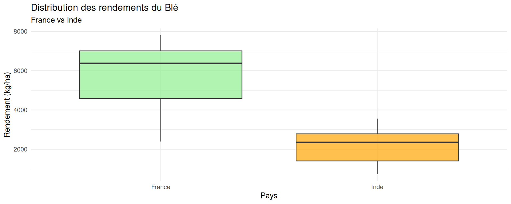
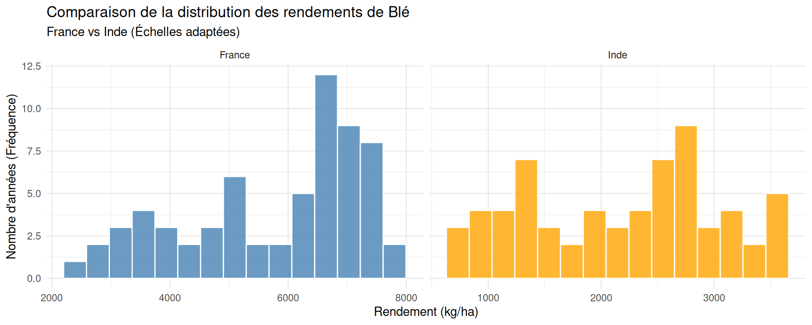
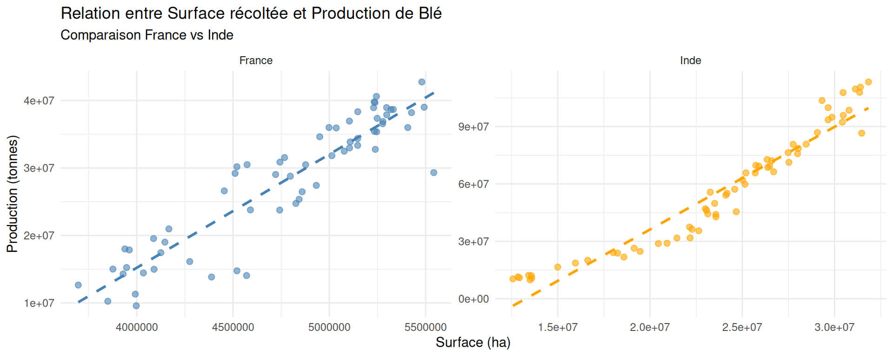

| Comparaison Statistique du Rendement | ||
| Blé : France vs Inde (Données FAOSTAT) | ||
| Statistique | France (kg/ha) | Inde (kg/ha) |
|---|---|---|
| Min | 2 395.00 | 729.90 |
| 1er Qu. | 4 580.75 | 1 404.38 |
| Médiane | 6 373.60 | 2 353.15 |
| Moyenne | 5 763.68 | 2 194.59 |
| 3ème Qu. | 7 007.65 | 2 784.43 |
| Max | 7 800.80 | 3 559.00 |
| Écart-type | 1 521.05 | 848.76 |
| Variance | 2 313 591.97 | 720 394.28 |
| Comparaison Statistique du Rendement | ||
| Blé : France vs Inde (Données FAOSTAT) | ||
| Statistique | France (kg/ha) | Inde (kg/ha) |
|---|---|---|
| Min | 2 395.00 | 729.90 |
| 1er Qu. | 4 580.75 | 1 404.38 |
| Médiane | 6 373.60 | 2 353.15 |
| Moyenne | 5 763.68 | 2 194.59 |
| 3ème Qu. | 7 007.65 | 2 784.43 |
| Max | 7 800.80 | 3 559.00 |
| Écart-type | 1 521.05 | 848.76 |
| Variance | 2 313 591.97 | 720 394.28 |



Le nuage de points révèle que pour la France et pour l’Inde, la relation semble être très linéaire. L’augmentation de la production est donc fortement corrélée à la gestion des surfaces, mais malgré une surface bien plus grande, a une production moins efficace (rendements 2–3x inférieurs) et plus variable. L’Inde récolte plus de blé en volume total (jusqu’à 90M tonnes) grâce à sa surface immense, mais son rendement à l’hectare reste très faible par rapport à la France. Alors que la France a une relation surface-production très stable grâce à des rendements élevés et homogènes (~7 000 kg/ha).
Avec un coefficient de corrélation très proche de 1 (0.92), la France affiche une corrélation quasi-parfaite. De même pour l’Inde qui a un coefficient de corrélation très proche de 1 également (0,96). Les deux pentes sont raides, celle de la France l’est légèrement plus que celle de l’Inde ce qui signifie que chaque hectare “rapporte” un peu plus de tonnes qu’en Inde. De plus, en France les rendements sont élevés et stables avec peu de gaspillage de surface tandis qu’en Inde, la surface est immense, mais les rendements 2-3x inférieurs.
#ConclusionL’analyse montre un écart très marqué entre la France et l’Inde concernant la culture du blé. La France affiche des rendements par hectare bien supérieurs, une plus grande homogénéité et une productivité nettement plus élevée. À l’inverse, l’Inde exploite des surfaces bien plus vastes mais avec des rendements globalement faibles et peu de variabilité.
Les statistiques révèlent que la France surpasse l’Inde à la fois en termes de moyenne, de minimum et de maximum atteints. La relation entre surface cultivée et production est forte dans les deux pays, mais chaque hectare français “rapporte” bien plus de blé que son équivalent indien.
En résumé, la France illustre la réussite d’une agriculture intensive et performante, alors que l’Inde, malgré son importance agricole, doit relever les défis d’une meilleure productivité pour améliorer sa sécurité alimentaire.